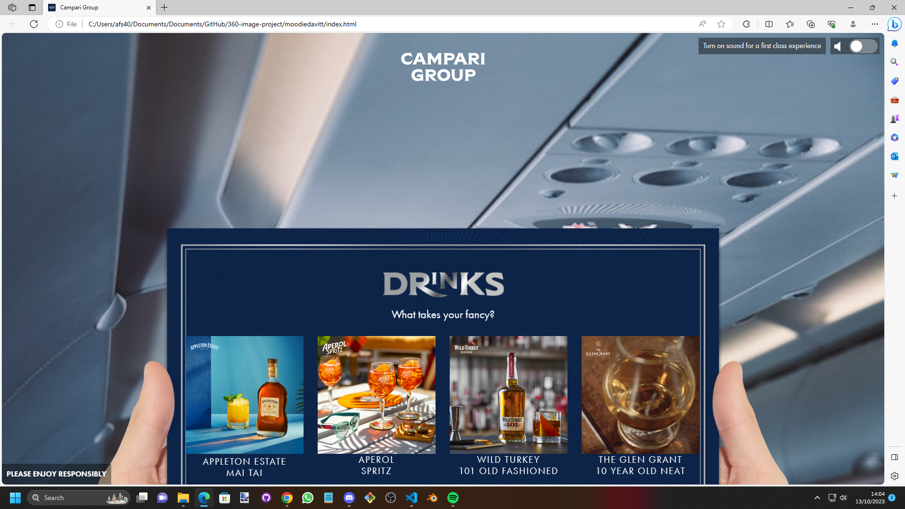
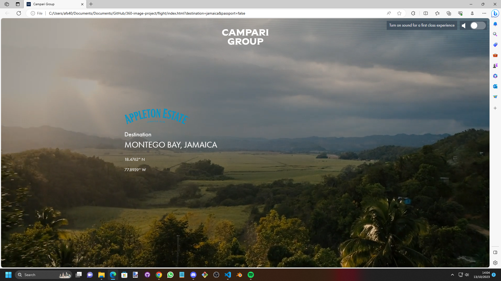
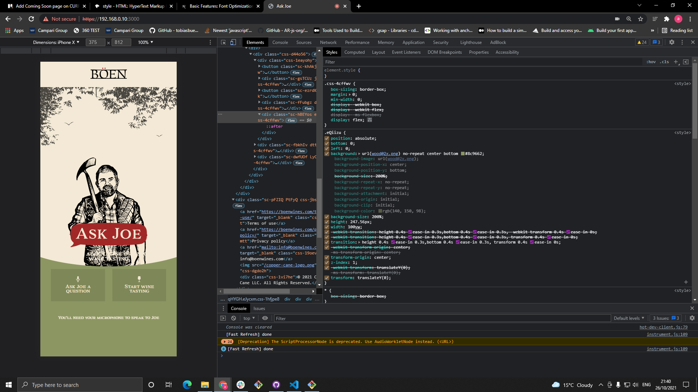
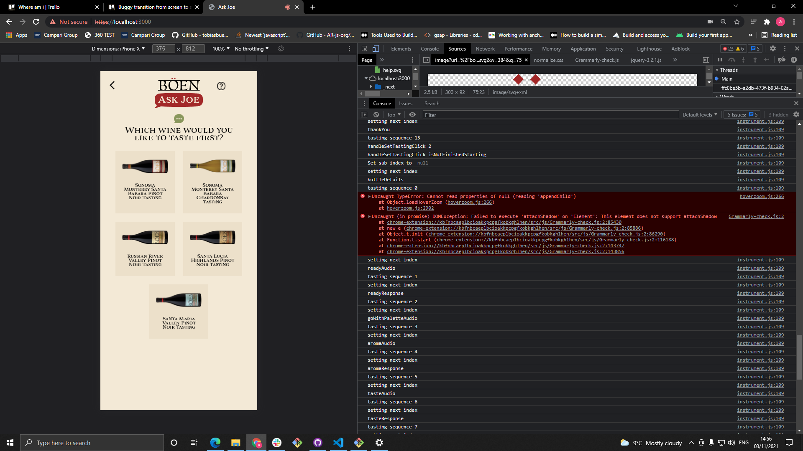

Ahmad Faisal Saqib
I'm an experienced front-end developer with a strong track record of creating dynamic web and mobile applications using a wide range of frameworks and JavaScript libraries. Over the past two years, I've honed my skills in JavaScript, HTML, CSS, React, WebGL, and Unity3D, consistently delivering high-quality, scalable, and user-friendly solutions.
What Sets Me Apart
- Diverse Skill Set: My proficiency spans across various front-end technologies, allowing me to tackle projects with a versatile and comprehensive approach.
- Quick Learner: I have a demonstrated ability to rapidly adapt to new technologies, making me an asset in fast-paced development environments.
- WebGL Expertise: I have made significant contributions to several WebGL projects, showcasing my expertise in creating immersive and interactive web experiences.
Experience
Software Developer
Supervoid Software Ltd · Contract
Sep 2021 - Oct 2022 · 1 yr 2 mos
Location: London · Remote
Responsibilities:
- Collaborated with a skilled team to design, develop, and deploy web and mobile applications using technologies such as Javascript, React, Babylon.js, Three.js, Unity3D, and advanced Augmented Reality (AR) frameworks like 8th Wall.
- Led the development of sophisticated projects from inception to completion, prioritizing the delivery of superior, scalable, and intuitive solutions to enhance user experience.
Software Engineer
Superblack Software LTD · Contract
Oct 2020 - Sep 2021 · 1 yr
Location: London · Remote
Projects:
- Collaborated on multiple exciting projects, including Babylon.js game projects and interactive product exploration experiences.
- Created intricate maps and environments using Unity and Babylon.js for immersive game projects.
- Utilized React with Babylon.js to craft a unique user experience with responsive audio dialogue.
- Developed an interactive product exploration project using Babylon.js, focusing on delivering a seamless user experience.
Responsibilities and Achievements:
- Worked with a talented team of developers to deliver high-quality solutions.
- Collaborated with colleagues to ensure the success of projects and develop new skills.
- Contributed to creating engaging and user-friendly applications.
Projects:
To Do App
Created August 2023 at Just it Bootcamp
I developed a To-Do app using HTML, CSS, and JavaScript. This app enables users to add tasks to a list, complete with date stamps. Key components and functionality include:
- HTML Structure: Designed the user interface using HTML with a table for displaying tasks and an input box for adding new tasks.
- Styling with CSS: Applied CSS to enhance the visual appeal of the app, including styling for buttons, input boxes, and task lists.
- JavaScript Functionality: Implemented JavaScript features for adding tasks, marking tasks as completed, and utilizing local storage to persist tasks across page refreshes.
FilmFlix App
Created September 2023 at Just it Bootcamp
FilmFlix is a film database application built in Python, designed to help users manage and retrieve information about films. Key features include:
- Python-Powered: Developed a menu-driven interface for users to add, delete, update, and generate reports on films, with efficient data management using SQLite.
- Database Interaction: Interfaced with an SQLite database for efficient storage, retrieval, and management of film data.
Lottery Game Web
Created February 2023
The lottery game was created using HTML, CSS, and TypeScript. The HTML and CSS provide the structure and styling for the game's interface, while TypeScript handles the game logic.
The game allows the user to select six numbers from a range of 1 to 59 and then generates six random numbers. The game checks how many of the user's chosen numbers match the winning numbers, and awards a prize based on the number of matches.
Skills: TypeScript · HTML · CSS · Webpack
Babylon js 3D Game
Created December 2022
Developed a 3D game using React and Babylon.js, featuring a first-person camera, intuitive controls, and engaging game play mechanics. Implemented advanced 3D graphics and physics capabilities to create a realistic and immersive gaming experience. Successfully delivered a fully functional game.
Skills: Babylonjs · HTML · JavaScript · CSS
8THWALL AR
Created March 2022
Developed an augmented reality (AR) experience using 8thwall's image targeting and Three.js libraries, featuring a detailed 3D model of a vape pen. Implemented advanced AR capabilities to create a seamless and immersive experience for users. Successfully delivered a unique and engaging project that innovatively showcased the product and received positive feedback from users.
Skills: Three.js · HTML
MoodieDavitt
Created January 2021
Collaborated on the development of an interactive app for the Campari Group, featuring a comprehensive catalogue of their beverages. Utilized Babylon.js to create an engaging and immersive user experience, including a new interactive beverage section with detailed information and content. They have contributed to the overall improvement and expansion of the app, including fixing errors and adding additional content to all beverage sections. Delivered a fully-functional and visually appealing update to the app that received positive feedback.


Ask Joe
Created May 2021
Enhanced and extended the functionality of an interactive, dialogue-recognizing app using React. Implemented new features such as additional dialogue options and a welcome page, and made UI improvements to enhance the user experience. Successfully delivered a fully-functional and visually appealing update to the app that received positive feedback from.
Skills: React.js · HTML


Programming Languages
- JavaScript : Proficient
- HTML : Proficient
- CSS : Proficient
- Python : Proficient
- React : Familiar
- MySQL : Familiar
- Unity3D : Experienced
- WebGL : Experienced
Further Education
June 2023 - Oct 2023
London
I recently completed a coding Bootcamp at Just it Bootcamp, where I deepened my expertise in web development technologies. The intensive training program equipped me with a strong foundation in both front-end and back-end development, and I gained proficiency in the following skills:
- HTML
- CSS
- JavaScript
- Python
- MySQL
Education
Westminster City College, London
Sep 2002 - Apr 2006
London
I embarked on an enriching academic journey at Westminster City College, focusing on foundational studies in Mathematics, English, and Information Technology during my college years. This solid educational foundation served as a stepping stone as I progressed to achieve NVQ Advanced qualifications in these subjects. These accomplishments underscore my unwavering commitment to professional growth and proficiency in key areas.
- Phone Number: 07476527594
- Email: afs405@gmail.com
- Linkedin:

Contact Details